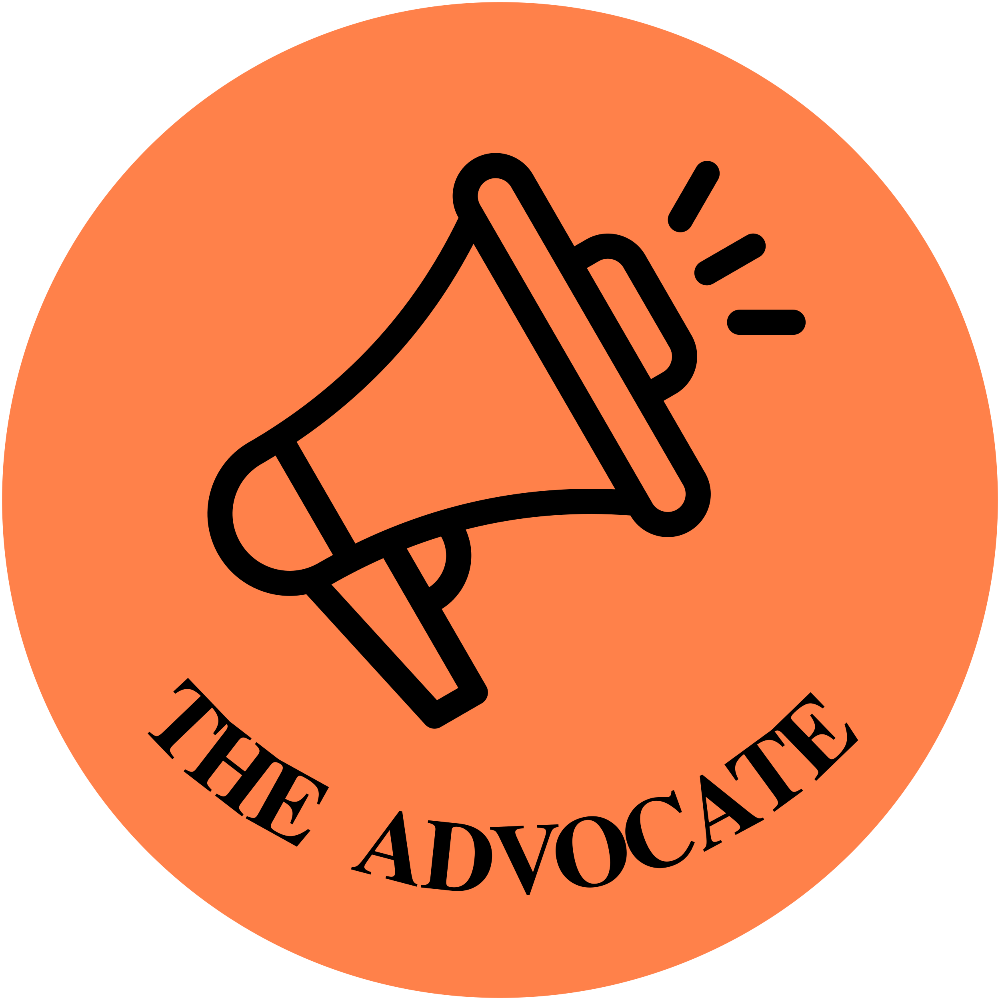
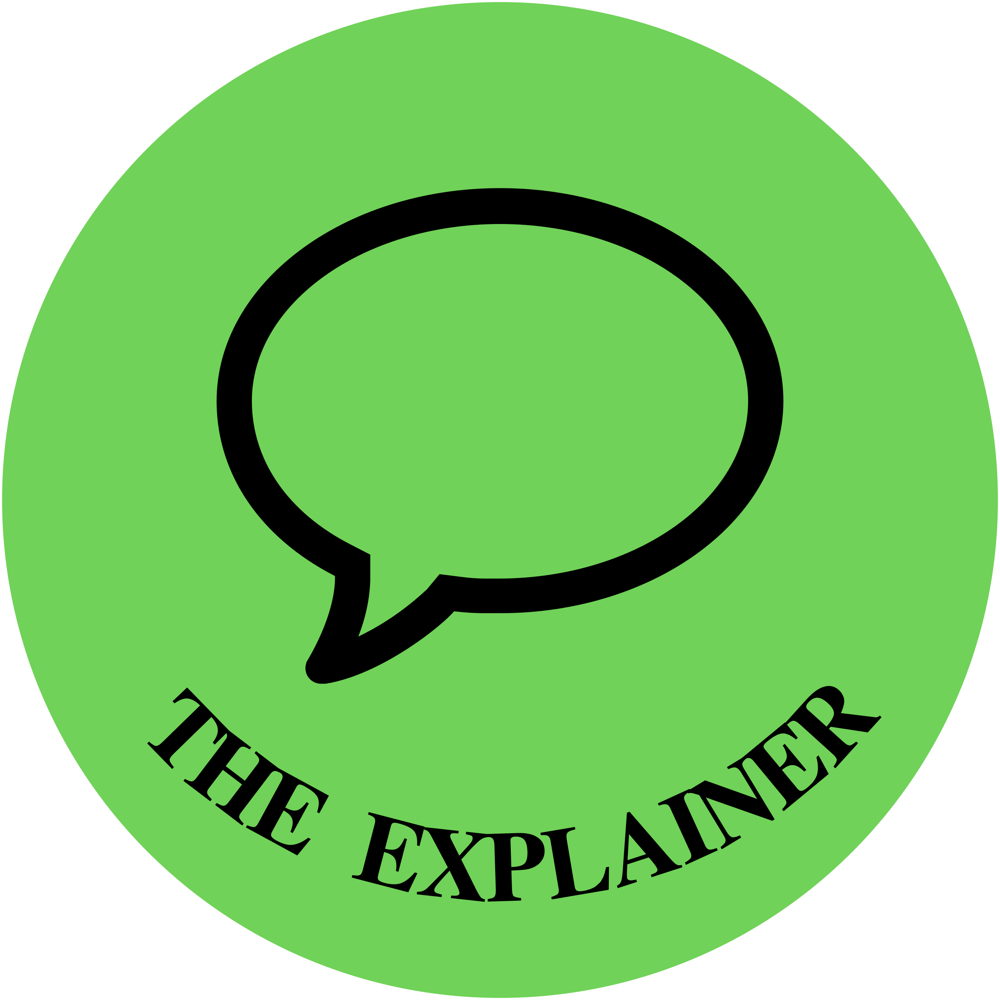
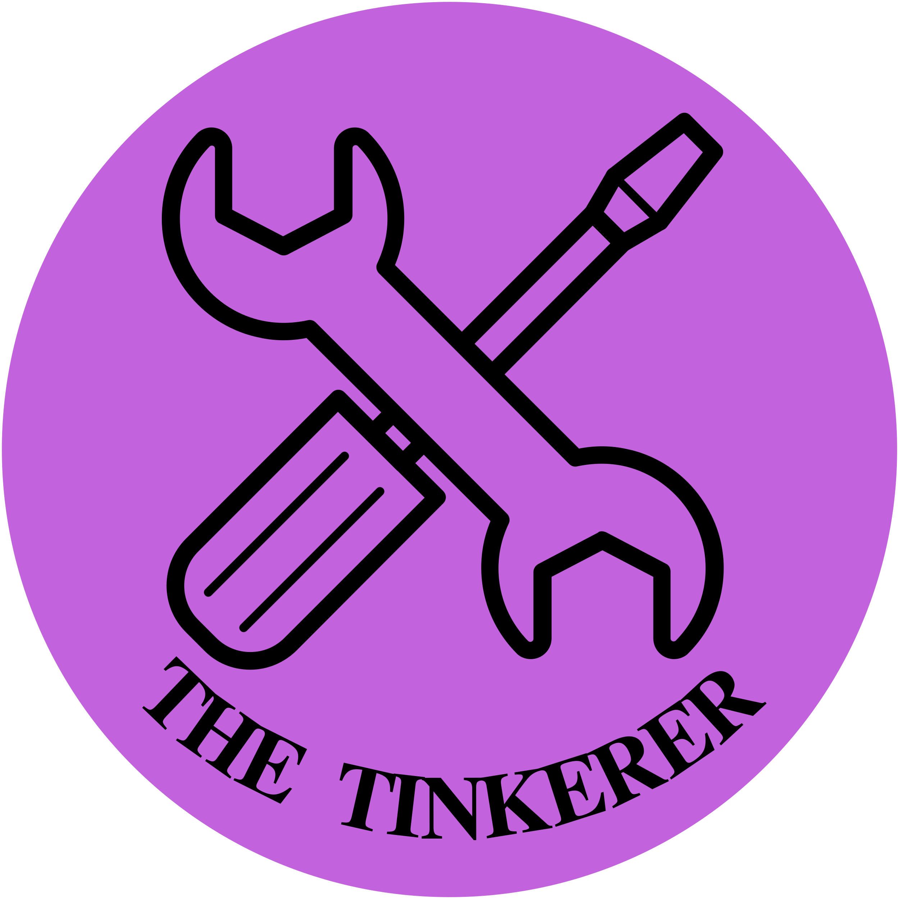
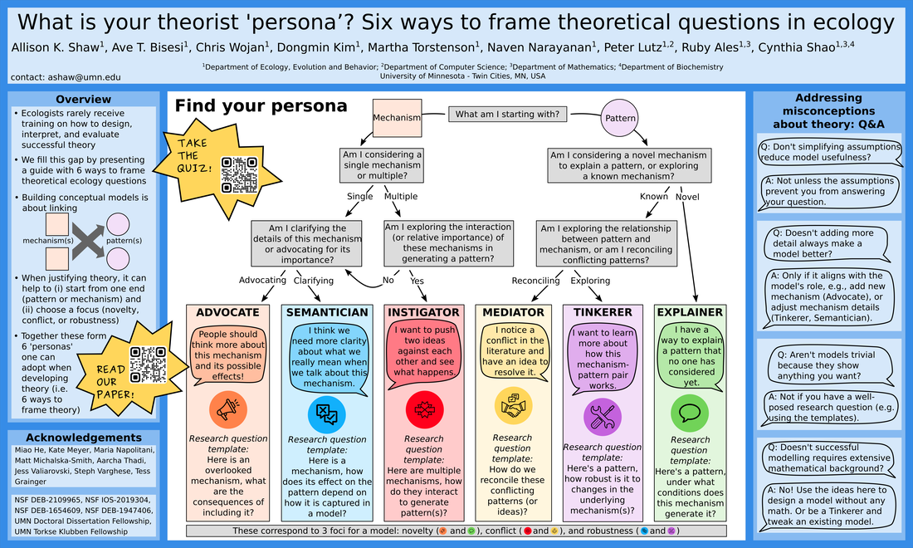

What is your theorist persona? Take our quiz and find out!
Background
Biologists rarely receive training on how to frame theoretical research questions. This is a critical gap
both for those conducting theoretical research as well as for anyone reading theoretical research (and
needing to evaluate when theory has been successful).
We developed a guide to fill this gap by presenting six verbal framings for theoretical models in biology.
These correspond to different personas one might adopt as a theorist.
Here is a template
for anyone looking to 'try on' different personas in order to get clear on their specific theoretical
research question.
Read more in our paper.
The Six Personas

the ADVOCATE: People should think more about this mechanism and its possible effects!

the EXPLAINER: I have a way to explain a pattern that no one has considered yet.
the INSTIGATOR: I want to push two ideas against each other and see what happens.
the MEDIATOR: I notice a conflict in the literature and I have an idea for how it can be resolved.
the SEMANTICIAN: I think we need some more clarity about what we really mean when we talk about this mechanism.

the TINKERER: I want to learn more about how this mechanism/pattern pair works.
ESA 2024 poster
See our poster from the 2024 Ecological Society of America meeting below.
